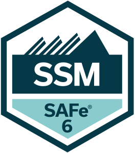
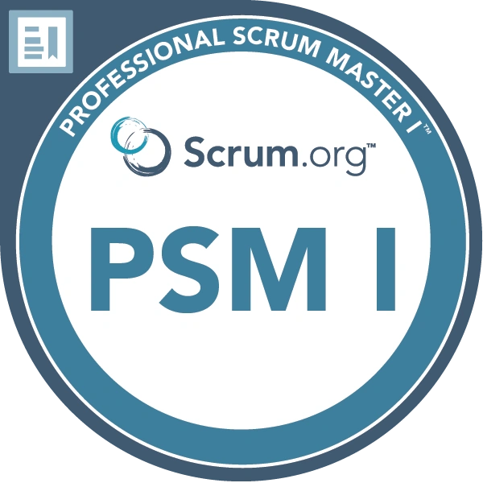
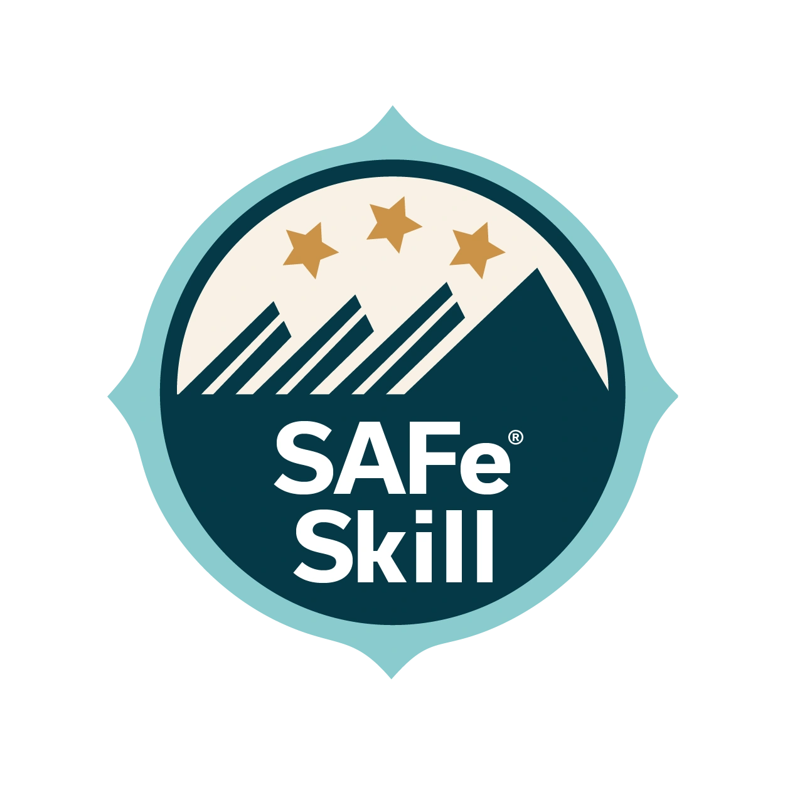
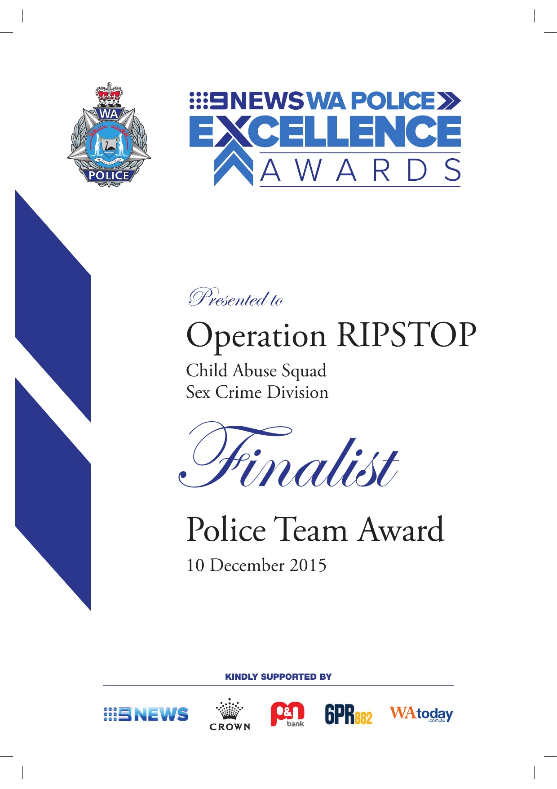
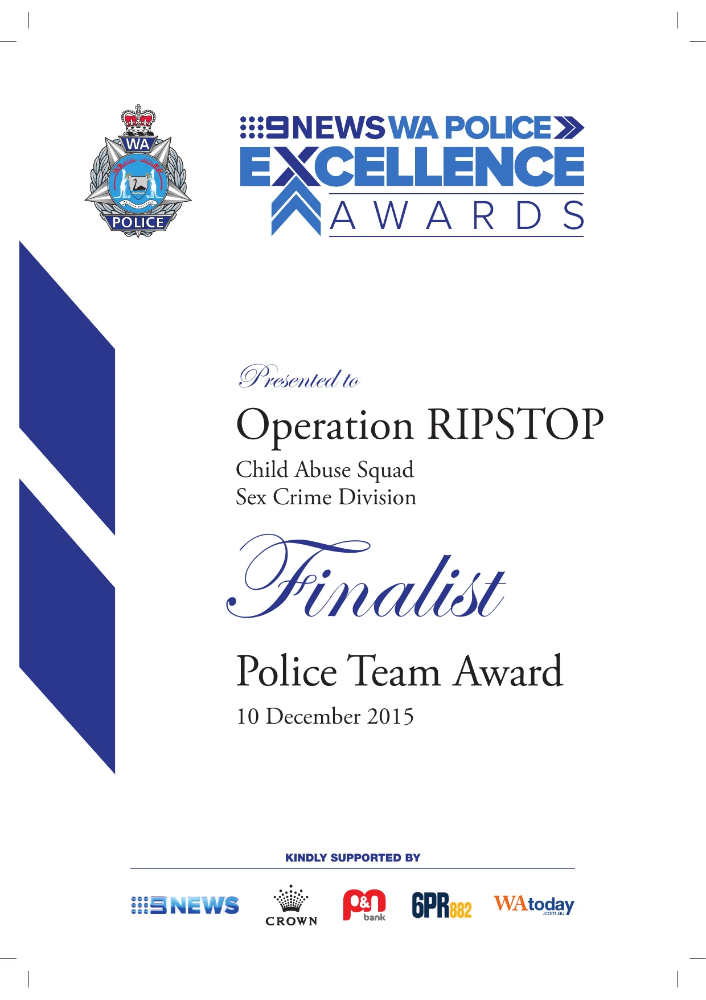

My Agile Journey
My Agile journey is rooted in a 22-year career in law enforcement, followed by two years in research. While my formal Scrum Master certification solidified my expertise, I’ve been embodying Agile principles throughout my professional life—fostering collaboration, prioritizing outcomes, and empowering teams to deliver impactful results.
As an Investigations Manager at a busy metropolitan police station, I coached and mentored team members to enhance their investigative capabilities, balanced agency objectives, and fostered collaboration across multiple stakeholders. These experiences taught me the value of servant leadership, adaptability, maintaining transparency, and iterative improvement — key principles at the heart of Agile methodologies. As a Research Assistant, I honed these skills further, facilitating cross-functional collaboration and leveraging data to inform team decision-making.
Throughout my career, I have prioritised fostering collaboration, removing blockers, and ensuring alignment across diverse teams. Whether leading high-pressure, multi-agency investigations or facilitating cross-functional discussions in research, I have consistently applied practices that mirror Agile principles. These experiences now guide my work as a certified Scrum Master, where I am dedicated to building high-performing teams and delivering value-driven outcomes.
As a Scrum Master, my vision is to create a culture of trust, collaboration, and continuous learning within teams. By empowering team members and aligning efforts with organisational goals, I aim to drive meaningful and impactful outcomes.




 

Highlights
- 2024 - Canva Force for Good Scholarship – She Codes Australia (2024-2025)
- 2021 - First Class Honours in Psychology, Edith Cowan University, with a thesis on improving responses for children and young people with harmful sexual behaviours
- 2018 - WA Police Medal for 10 years of diligent and ethical service
- 2017 - Police Officer of the Year, 9News WA Police Excellence Awards
- 2017 - Certificate of Outstanding Performance: "Most Outstanding Female Investigator," WA Police Force
- 2015 - Certificate of Outstanding Performance: Exemplary compassion for victims of the Royal Commission into Institutional Child Sexual Abuse
- 2009 - Dux of the Detective Investigation Course and Adrian Storm Award, WA Police Force
- 2005 - Bravery Award, Bavarian Police Force, for exceptional courage
Agile Tools and Techniques
I have experience using tools such as Jira, Trello, and GitHub Projects to facilitate Agile workflows. By applying techniques like story mapping and Kanban boards, I ensure teams remain focused and aligned on priorities. These tools and techniques have been integral in my training and project work, preparing me to support teams in delivering value efficiently.
My dedication to continuous learning is reflected in the numerous certifications I have earned, including Certified SAFe® 6 Scrum Master (SSM) and Professional Scrum Master I (PSM I). I have also completed courses in Agile Project Management, business analysis, and software development from LinkedIn Learning and other platforms. These accomplishments ensure I stay current with evolving practices and empower me to better support teams in Agile environments.